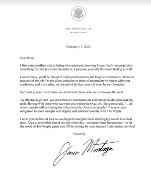

JamesMontagu
| 29th President of nUSA | |
|---|---|
| In office | |
| 21 November 2019 – 21 March 2020[1] | |
| Preceded by | AntonioTRoosevelt |
| Succeeded by | Reset4K
|
| NARA Presidential Records | |
JamesMontagu was the twenty-ninth President of the United States. He took office on 21 November 2019 after winning the fall election and was succeeded by Reset4K in March 2020. His presidency included a dispute with Russia over California and Alaska, internal-affairs reforms and a brief blacklist that was subsequently overturned.[2]
Earlier office and presidential campaign
A February 2019 announcement listed JamesMontagu among the winners of a House candidacy. The results post does not identify his seat or specify how long he served, and the reviewed records do not verify a prior mayoralty, city council seat, or Senate office.[3]
In October 2019, JamesMontagu ran for President as the Constitutionalist Party's candidate. The election announcement listed him as [CON] JamesMontagu, and Discord advertised campaign rallies on October 13 and 15. The Federal Election Commission's October 21 results letter reported 653 votes overall, including 322 for Montagu (11 disqualified), and certified him as the winner.[4]
The certification also recorded a major qualification dispute: it said Montagu was “not disqualified, but declared ineligible” under an injunction, and identified his running mate TomFoley as acting President-elect until Montagu qualified. The archive reviewed here does not include the ruling that resolved the injunction. By November 20, however, a Discord notice announced an inauguration for President-elect Montagu the next evening; a November 21 post advertised his presidency inauguration. These notices establish that his inauguration proceeded, but do not explain the intervening legal or administrative decision.[5]
A message posted on October 23 thanked voters and opened applications for the “Montagu Administration of 2019.” It described the coming term as a chance to change the country's direction and named AcidRaps as chief of staff contact. The archived campaign record does not preserve a fuller platform or a final staff list in that announcement.[6]
Presidency
A screenshot supplied for this archive shows a post from the JamesMontagu account dated 9 February 2020. Montagu praised the nUSA military and thanked Secretary of Defense Smallsights and service members. Its attached picture depicts a formation of Roblox characters; the screenshot does not identify the event or location shown.[7]
The Executive Archives records a Senate-confirmed first slate of senior officials. Royalfirel31 was nominated for Secretary of Commerce and Labor on November 21 and confirmed on November 24, 2019; Rualdownload was nominated for Director of National Intelligence on November 21 and confirmed on November 23. King_Bradley and AlphaTrooper05 were nominated to lead the Joint Chiefs of Staff on November 21 and confirmed two days later. Other records list later confirmations, including Smallsights as Secretary of Defense in January 2020 and Verzai as Secretary of State in February.[8]
Two executive orders in the Presidential Records board are attributed to Montagu. Executive Order 29-001 established the Bureau of Internal Affairs after the Office of Government Ethics closed. The 11-page order described the bureau as an executive-branch oversight and investigative body for employee compliance, ethics, and alleged crimes, with limits on its authority. Executive Order 29-002, dated March 9, 2020, exempted military personnel serving in executive agencies from mandatory events when military service was required during martial law, a state of war, or assistance to an ally. The board now labels both orders “Repealed,” without stating when or why they were repealed.[9]
National Security Presidential Memorandum 004, dated 10 February 2020, imposed a temporary executive hiring freeze through 20 February and required stronger background checks, while allowing individual hiring decisions with White House chief-of-staff approval. Memorandum 005, dated 15 February, directed American forces to intervene in a reported coup in New Zealand and secure Government House.[10]
In legislation, Discord reported that Montagu vetoed the Military Office Expansion Act of 2019 on November 24. A separate notice that day announced his signing of the National Veterans Day Establishment Act. The Public Law Database later indexed a related measure as Public Law 77-1 and marked it repealed. The records reviewed do not establish the date or reason for that repeal. A later House card for the JamesMontagu Legacy Recognition Act is filed under “Rescinded Bills,” so it does not establish an enacted law from his presidency.[11]
Blacklist and end of term

After the election, Montagu sent Reset a White House letter dated 17 February 2020. It offered advice about criticism, choosing trusted advisers, and involving citizens in decisions, and wished the incoming President success. The letter shows Montagu publicly acknowledging the coming transfer of office; it does not establish the exact date he left office.[12]
Montagu participated publicly in the transition at Reset4K's inauguration, where he delivered an outgoing address. The full text of that address remains unspecified.[13]
On January 11, 2020, the Coalition Against Abuse announced that it had blacklisted Montagu and described him as a former President. The next day, founder Pauljkl wrote to Montagu that, after a hearing, Clan Management had revoked the blacklist and that Montagu would serve the remainder of his term. The records therefore document a brief interruption and reversal, not a permanent removal from the presidency.[14]
Montagu ran again in the Winter 2020 presidential election with BernardCaldwell as his running mate. The Federal Election Commission certified Reset3634643 of the Democratic Party as the winner on February 17; its letter reported 277 votes for Reset3634643 and 242 for Montagu before the listed disqualifications. A Discord notice on March 20 scheduled Reset4K's inauguration for the next day, and the NARA roster assigns Reset4K the 30th presidency after Montagu. The same Discord export separately says Technozo would give an inaugural address on March 21, without explaining the occasion. The reviewed records do not include Montagu's resignation or a direct account of the transfer of office, so March 21 is the latest documented boundary for his term, rather than a confirmed time of departure.[15]
The Russian dispute and internal-affairs reform
In January 2020, Montagu's administration confronted Russia over claims to California and Alaska. After Russia rejected an American ultimatum, Montagu declared that he had a duty to defend the states. On 14 January, the White House announced a state of war, while Vice President BernardCaldwell reported that both chambers had passed the war resolution.[16]
On 22 January, the administration announced a negotiated peace treaty and stated that Russia had agreed to return the disputed states. It explicitly conditioned the end of the state of war on Senate ratification. The announcement therefore marked a diplomatic agreement awaiting a constitutional step, rather than proving that ratification had already occurred.[17][18]
The administration also pursued centralized oversight of federal employment. On 27 February, Montagu issued an order outlining the establishment, duties and jurisdiction of the Bureau of Internal Affairs. A 2 March notice invited complaints about abuse within departments and agencies. The measure placed the bureau within the administration's effort to make internal accountability accessible across institutional boundaries.[19][20]
- ↑ Nusapedia, “President of the United States”, presidential chronology, accessed 30 September 2026.
- ↑ Discord #nusa-updates, November 20–21, 2019, Python splitlines() L15969-L16003; Discord #announcements, February 17, 2020, L3474-L3484 and March 20–21, 2020, #nusa-updates, L16996-L17020; AntonioTRoosevelt, 28th, JamesMontagu, 29th, and Reset4K, 30th, NARA Presidential Records board.
- ↑ Discord #announcements, February 8, 2019, Python splitlines() L1974-L1989.
- ↑ Discord #announcements, October 17, 2019, Python splitlines() L3128-L3147; #nusa-updates, October 13 and 15, 2019, L15237-L15251 and L15272-L15286; “2019-10-21 Letter to Congress RE Fall 2019 Results,” pp. 1–2, linked in Discord #announcements, Python splitlines() L3191-L3203: PDF.
- ↑ “2019-10-21 Letter to Congress RE Fall 2019 Results,” pp. 1–2; Discord #announcements, Python splitlines() L3191-L3203; Discord #nusa-updates, November 20–21, 2019, L15969-L16003.
- ↑ Discord #nusa-updates, October 23, 2019, Python splitlines() L15497-L15507.
- ↑ Screenshot of JamesMontagu's post, dated 9 February 2020, supplied by the wiki creator.
- ↑ Royalfirel31, Secretary of Commerce and Labor; Rualdownload, Director of National Intelligence; King_Bradley, Chairman of the Joint Chiefs of Staff; AlphaTrooper05, Vice Chairman of the Joint Chiefs of Staff; Smallsights, Secretary of Defense; and Verzai, Secretary of State, Executive Archives board.
- ↑ Executive Order 29-001, attachment “ESTABLISHMENT OF THE BUREAU OF INTERNAL AFFAIRS,” pp. 1–11 (signature dated February 27, 2020, p. 11); Executive Order 29-002, attachment “MILITARY EXEMPTION FROM MANDATORY EVENTS,” p. 1 (dated March 9, 2020), NARA Presidential Records board. Both cards carry the “Repealed” label.
- ↑ Memorandum #004, “Hiring Freeze,” pp. 1–2; Memorandum #005, “New Zealand Coup Intervention,” p. 1, NARA Presidential Records board.
- ↑ Discord #nusa-updates, November 24, 2019, Python splitlines() L16139-L16165; Public Law 77-1, National Veterans Day Establishment Act (marked “Repealed”); H.R. 31, The JamesMontagu Legacy Recognition Act (listed under “Rescinded Bills”).
- ↑ JamesMontagu, post containing letter to Reset, 17 February 2020; archived screenshot of letter.
- ↑ JamesMontagu, inauguration post; archived screenshot.
- ↑ Discord #announcements, January 11, 2020, Python splitlines() L3329-L3338; “2020-01-11 Letter Re JamesMontagu Blacklist,” p. 1; Discord #nusa-updates, January 12, 2020, Python splitlines() L16596-L16608; “2020-01-12 Letter to President Montagu RE Decision,” p. 1.
- ↑ Discord #announcements, February 13–17, 2020, Python splitlines() L3412-L3429 and L3474-L3484; “2020-02-17 Letter to Congress RE Winter 2020 Results,” pp. 1–2, linked at Discord #announcements, Python splitlines() L3477-L3484; Discord #nusa-updates, March 20–21, 2020, Python splitlines() L16996-L17020; Reset4K, 30th, NARA Presidential Records board.
- ↑ Presidential statement, 14 January 2020; War announcement, 14 January 2020; Vice-presidential notice of congressional approval, 14 January 2020.
- ↑ Peace treaty announcement, 22 January 2020.
- ↑ Montagu White House, notice concerning Senate ratification and the disputed states, 22 January 2020, preserved in
discord-archive-7012-1790806268742.txt, local source archive. - ↑ Bureau of Internal Affairs executive-order announcement, 27 February 2020.
- ↑ Montagu White House, Bureau of Internal Affairs reporting notice, 2 March 2020, preserved in
discord-archive-7012-1790806268742.txt, local source archive.